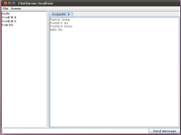
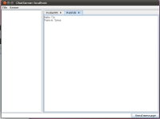

ChatServer
This is the project-part of the course EDA095 - Network Programming at LTH.
Main goal
The main goal of our project is to implement a chat-server and a client that can connect to this server. It consist of rooms where you can chat with multiple people, and private messages that are just sent to one user. You can also send files between users in a chatroom.
Technical
The protocoll is based on JSON, so the parsing is just left to be done by the json-simple-project. to be done by the json-simple-projects implementation. The JSON-messages are sent over a TCP-connection.
User manual
To start a server simply run the Server.jar file on the desired computer with the command:
java -jar Server.jar <name> <port>
Now clients can connect to the machine running the server. To launch a client simply run the Client.jar file with the command:
java -jar Client.jar
This gives you a connection dialog asking you which server to connect to. Input the host name of the machine running the server and the port that you supplied when you launched it and press Connect.
You are now connected to the server! To join a chat room go to the menu and click Server -> Join room... and input the name of the room you want to join. Other participants in the room will show up in the list on the left. To leave the chat room simply press the cross on the tab.
To send a message simply write it in the bottom text field and press Enter och click the Send message button.
To initiate a private conversation with someone right click on their name in the list on the left and click Send Private Message. This creates a new tab named after the participant you clicked on. Writing a message is done the same way as in a chat room but the message will now only go to the other person.
File transfers are initiated much in the same way. Right click the participant you want to send the file to and choose Send File. This brings up a dialog where you can choose the file. Once you press Open the other party will be asked to accept the file you chose. If they do this the file transfer will start and soon they will have the file you sent.
To disconnect from the server either press File -> Quit in the menu or just click the cross at the top of the window.
Screenshots
 {kind=link}
{kind=link}
//dt08fs1, dt08ce7, dt08pf4 and dt08fa4